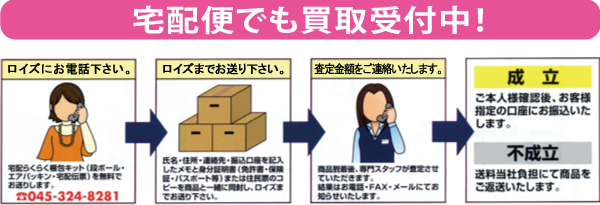

神奈川県横浜市神奈川区のリサイクルショップのことならリサイクルブティックロイズへ
赤い字の日はお休みです。
☆GW休業のお知らせ☆
ゴールデンウィークのお休みは、カレンダー祝日(4/29-30,5/3-5)の通りです。
又、5/1-2は通常通り営業しております。
よろしくお願いいたします。
ロイズ 店主
このページのコンテンツには、Adobe Flash Player の最新バージョンが必要です。

店舗すぐ隣に無料駐車場があります！
東急東横線 反町駅より徒歩５分
横浜市営地下鉄 三ツ沢下町駅より徒歩６分
首都高速横浜駅西口出口、第３京浜保土ヶ谷インターよりそれぞれ車で５分です。